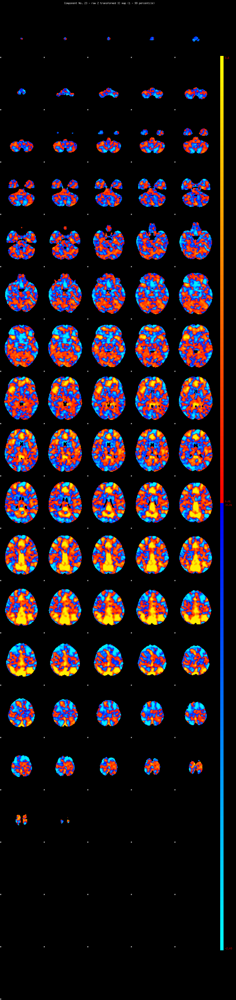
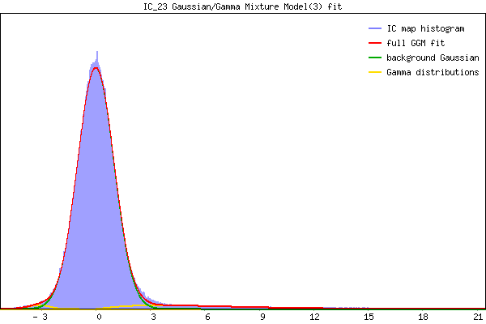

IC_23 Mixture Model fit
Means : 0.000000 6.457662 -3.224525
Vars : 1.000000 18.972718 0.395068
Prop. : 0.939819 0.050787 0.009394
This page produced automatically by MELODIC Version 3.15 - a part of FSL - FMRIB Software Library.